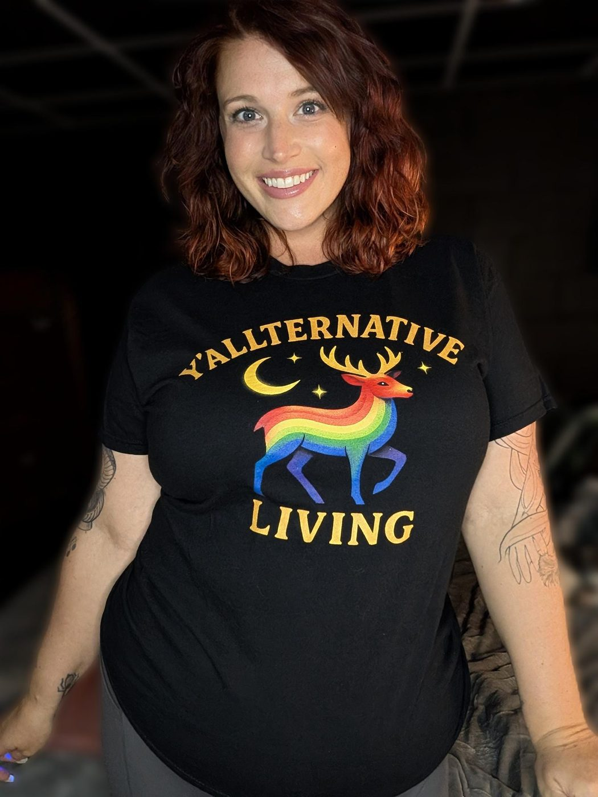
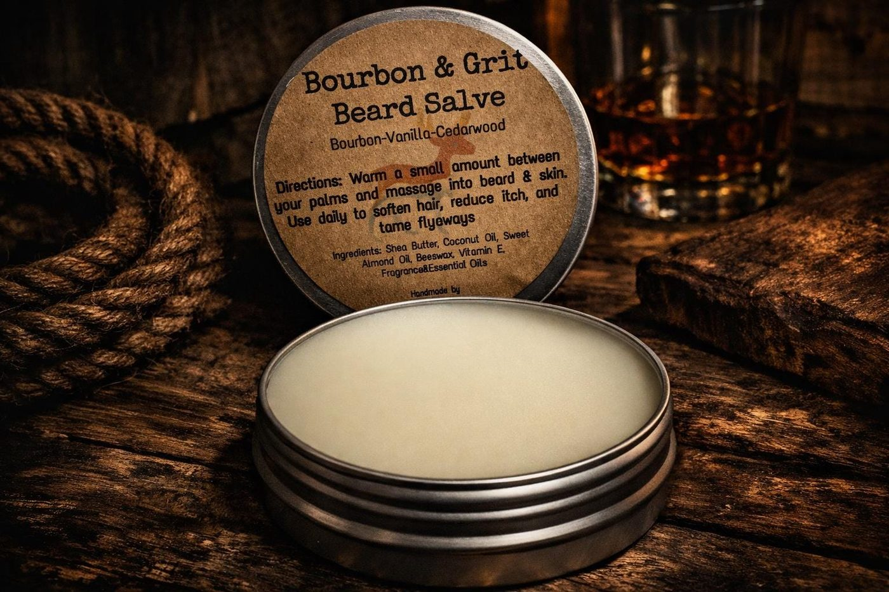

Part Goth, Part Grit, All Heart
This is the part where we're supposed to sound polished and corporate. Instead, here's the truth: just a girl, a stove full of salves, and a whole lot of us who never fit neatly into one box. Come on in.

Meet Savanna
Hey Y'all, I'm Savanna
I'm the hands, the nose, and most days the mouth behind Y'allternative Living. Every salve, soak, and scrub gets mixed, poured, and labeled by hand right in Landrum, SC. No factories, no focus groups. Just me, my kitchen, and an unreasonable number of mason jars.
Growing up in these foothills, you get handed sweet tea in one hand and a church potluck plate in the other. If you're anything like me, you spend years thinking you have to pick a side: country or alternative, Southern or strange. Turns out, this dirt raised a whole quiet army of us: goth kids working the peach stand, emo kids who still say "y'all," queer folks who never left because this is home too. Backroads, porch lights, and sweet tea still run through everything I make here—eyebrow-raising parts included. Y'allternative Living is for every one of us who got tired of choosing.
What started as small batches of soaks and salves a little over a year ago has grown into a proper apothecary. Showing up face-to-face is part of the job, not an afterthought. I built this so people like us have handmade self-care made with them in mind. Creating honest goods was always the whole mission statement.
Find Us In The Wild
The internet's great, but this business was built on face-to-face, the kind where you can actually smell the shea butter before you buy it. When the calendar lines up, you'll find our folding table at farmers markets, festivals, and Pride events with a little extra glitter on the display. Taking up space in person matters just as much as taking it up online.
Follow @yallternativeliving on Instagram and TikTok for the real-time pop-up schedule. That's where we post exactly where the table's landing next.

Ready To Treat Yourself?
Handmade, small-batch, and mixed for you - not for a demographic. Grab a jar and make yourself at home.
Shop The Collection